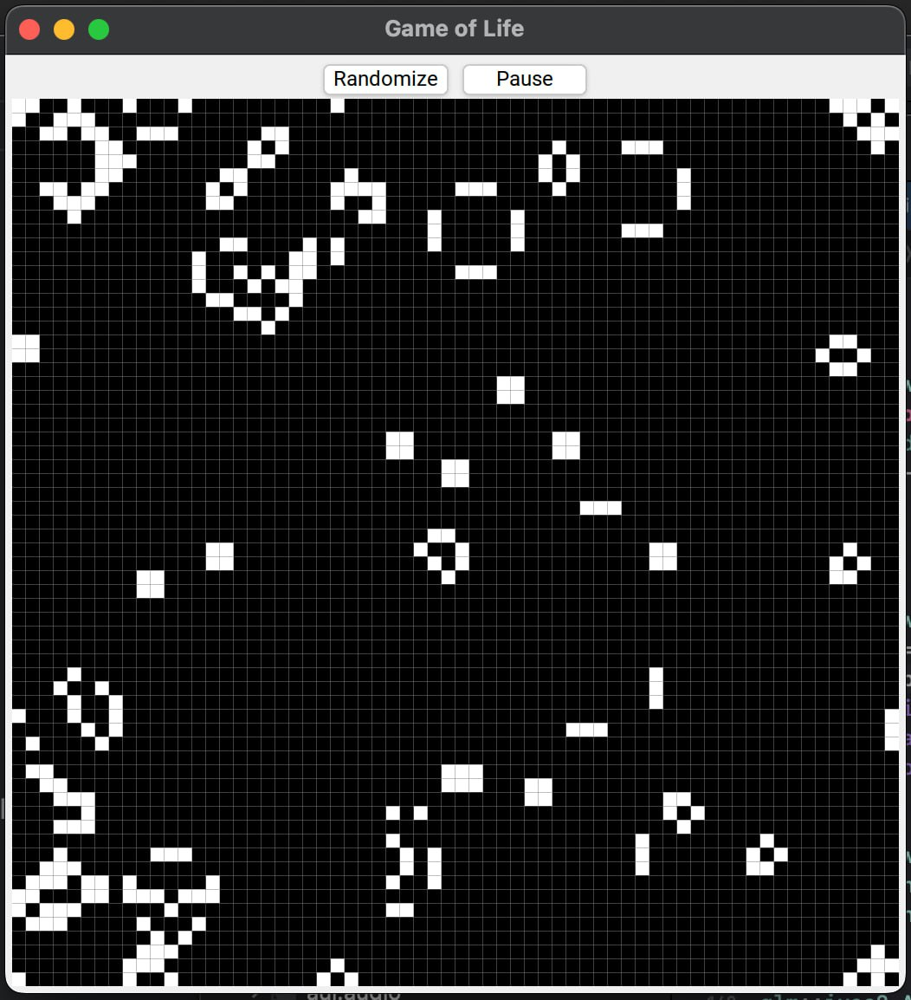

- Note
- This page describes an example listed in Application Examples.
- Game of Life implementation that uses advanced large dynamic data rendering techniques such as ITexture, AImage to be GPU friendly. The computation is performed in AThreadPool.

Conway's Game of Life, a cellular automaton devised by the mathematician John Conway. The game consists of a grid where each cell can be either alive or dead, and its state evolves over time according to simple rules based on the states of adjacent cells.
Every cell interacts with its eight neighbours, which are the cells that are horizontally, vertically, or diagonally adjacent. At each step in time, the following transitions occur:
- Any live cell with fewer than two live neighbours dies, as if by underpopulation.
- Any live cell with two or three live neighbours lives on to the next generation.
- Any live cell with more than three live neighbours dies, as if by overpopulation.
- Any dead cell with exactly three live neighbours becomes a live cell, as if by reproduction.
Wikipedia
Cells#
Represents the grid of cells with their states (CellState::ALIVE or CellState::DEAD). It has methods for initialization and randomization, as well as accessors to get the size and state of individual cells.
Computations are handled asynchronously by an AThreadPool, improving performance during state transitions or rule computations in large grids.
public:
Cells(glm::ivec2 size) {
mSize = size;
for (auto s : { &mStorage, &mNextPopulation }) {
s->resize(size.x * size.y);
}
}
void frame() {
for (int y = 0; y < mSize.y; ++y) {
for (int x = 0; x < mSize.x; ++x) {
glm::ivec2 i { x, y };
get(mNextPopulation, i) = [&] {
auto around = cellsAround(i);
switch (around) {
default:
return CellState::DEAD;
case 2:
return get(mStorage, i);
case 3:
return CellState::ALIVE;
}
}();
}
}
std::swap(mStorage, mNextPopulation);
};
}
[[nodiscard]] glm::ivec2 size() const noexcept { return mSize; }
[[nodiscard]] const AVector<CellState>& storage() const noexcept { return mStorage; }
[[nodiscard]] CellState& operator[](glm::ivec2 position) { return get(mStorage, position); }
void randomize() {
ranges::generate(mStorage, [&] {
static std::default_random_engine re;
static std::uniform_int_distribution d(0, 10);
return d(re) > 7 ? CellState::ALIVE : CellState::DEAD;
});
}
AProperty<bool> isRunning = false;
private:
_<ATimer> mTimer = _new<ATimer>(100ms);
AFuture<> mFrame;
glm::ivec2 mSize {};
AVector<CellState> mStorage;
AVector<CellState> mNextPopulation;
CellState& get(AVector<CellState>& storage, glm::ivec2 position) {
position %= mSize;
if (position.x < 0) {
position.x = mSize.x + position.x;
}
if (position.y < 0) {
position.y = mSize.y + position.y;
}
return storage[position.y * mSize.x + position.x];
}
unsigned cellsAround(glm::ivec2 position) {
unsigned accumulator = 0;
for (int y = -1; y <= 1; ++y) {
for (int x = -1; x <= 1; ++x) {
if (x == 0 && y == 0) {
continue;
}
accumulator += get(mStorage, position + glm::ivec2 { x, y }) == CellState::ALIVE ? 1 : 0;
}
}
return accumulator;
}
};
A base object class.
Definition AObject.h:39
static AThreadPool & global()
Global thread pool created with the default constructor.
static decltype(auto) connect(const Signal &signal, Object *object, Function &&function)
Connects signal to the slot of the specified object.
Definition AObject.h:86
ASignal< Args... > emits
A signal declaration.
Definition ASignal.h:577
#define slot(v)
Passes some variable and type of the variable separated by comma. It's convenient to use with the con...
Definition kAUI.h:88
#define emit
emits the specified signal in context of this object.
Definition AObject.h:344
CellsView#
Visualizes the grid using a texture. It updates the texture when cells change their states. When the pointer is pressed on the view, it toggles the state of the cell under the cursor.
The grid is composed by lines in drawGrid lambda. These lines are then passed to the rendering, making a single draw call to draw the grid.
class CellsView :
public AView {
public:
static constexpr auto SCALE = 8_dp;
CellsView(
_<Cells> cells) : mCells(std::move(cells)) {
connect(mCells->frameComplete, me::updateTexture); }
if (mTexture) {
}
auto drawGrid = [&] {
ASmallVector<std::pair<glm::vec2, glm::vec2>, 128 * 2> points;
for (int i = 1; i < mCells->size().x; ++i) {
points << std::make_pair(glm::vec2(i * SCALE, 0.f), glm::vec2(i * SCALE,
getSize().y));
}
for (int i = 1; i < mCells->size().y; ++i) {
points << std::make_pair(glm::vec2(0.f, i * SCALE), glm::vec2(
getSize().x, i * SCALE));
}
ctx.render.
lines(ASolidBrush { AColor::GRAY }, points);
};
drawGrid();
}
glm::ivec2 position = glm::ivec2(event.
position /
float(SCALE));
(*mCells)[position] = !(*mCells)[position];
updateTexture();
}
private:
_<Cells> mCells;
_<ITexture> mTexture;
void updateTexture() {
if (!mTexture) {
mTexture =
AWindow::current()->getRenderingContext()->renderer().getNewTexture();
}
CellsImage image(mCells->size());
for (unsigned y = 0; y < image.height(); ++y) {
for (unsigned x = 0; x < image.width(); ++x) {
image.set(
{ x, y },
AFormattedColorConverter(
(*mCells)[glm::ivec2(x, y)] == CellState::ALIVE
? AColor::WHITE
: AColor::TRANSPARENT_BLACK));
}
}
mTexture->setImage(image);
}
};
Base class of all UI objects.
Definition AView.h:78
virtual void render(ARenderContext ctx)
Draws this AView. Noone should call this function except rendering routine.
void redraw()
Request window manager to redraw this AView.
glm::ivec2 getSize() const noexcept
Size, including content area, border and padding.
Definition AView.h:217
virtual int getContentMinimumHeight()
virtual int getContentMinimumWidth()
virtual void onPointerPressed(const APointerPressedEvent &event)
Called on pointer (mouse) released event.
static AWindowBase * current()
virtual void lines(const ABrush &brush, AArrayView< glm::vec2 > points, const ABorderStyle &style, AMetric width)=0
Draws polyline (non-loop line strip).
virtual void rectangle(const ABrush &brush, glm::vec2 position, glm::vec2 size)=0
Draws simple rectangle.
An std::weak_ptr with AUI extensions.
Definition SharedPtrTypes.h:179
glm::vec2 position
Where does the event occurred.
Definition APointerPressedEvent.h:25
Render context passed to AView::render.
Definition ARenderContext.h:43
GameOfLifeWindow#
This is the main window for the Game of Life application. It sets up the UI with buttons to randomize the grid and start/pause the game, as well as a central area where the CellsView is displayed.
class GameOfLifeWindow :
public AWindow {
public:
GameOfLifeWindow() :
AWindow(
"Game of Life") {
Centered {
Horizontal {
_new<AButton>(
"Randomize")
let {
},
it & mCells.isRunning > [](
AButton& b,
bool isRunning) {
b.setText(isRunning ? "Pause" : "Run");
};
connect(it->clicked, [&] { mCells.isRunning = !mCells.isRunning; });
},
},
},
Centered {
Expanding(),
BackgroundSolid(AColor::BLACK),
},
},
});
}
private:
Cells mCells { { 64, 64 } };
};
void setContents(const _< AViewContainer > &container)
Moves (like via std::move) all children and layout of the specified container to this container.
Represents a window in the underlying windowing system.
Definition AWindow.h:45
#define let
Performs multiple operations on a single object without repeating its name (in place) This function c...
Definition kAUI.h:262
#define with_style
Allows to define a style to the view right in place.
Definition kAUI.h:287
static _< T > fake(T *raw)
Creates fake shared pointer to T* raw with empty destructor, which does nothing. It's useful when som...
Definition SharedPtrTypes.h:429
Source Files#